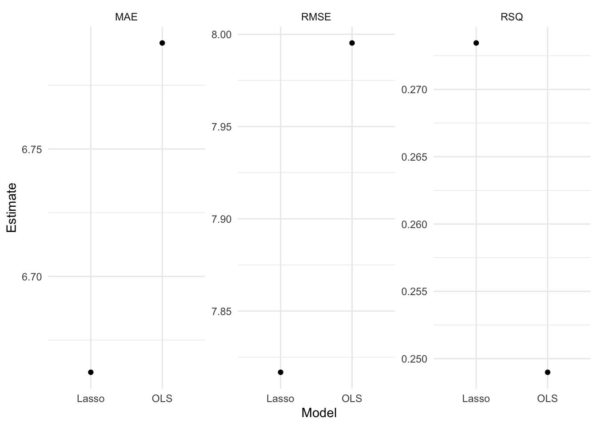
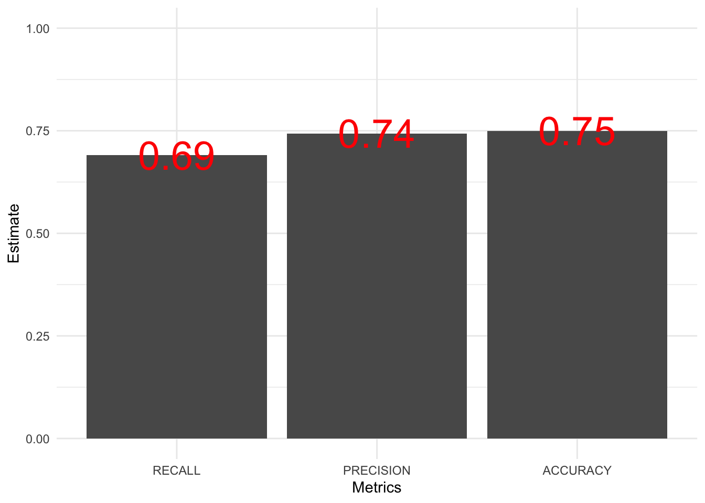
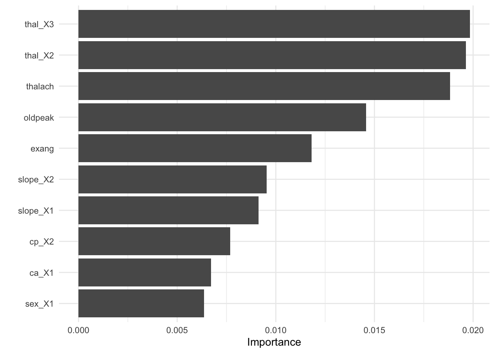
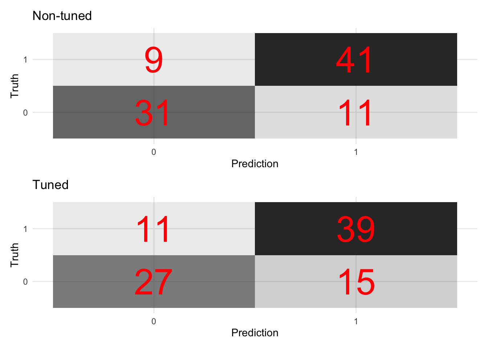

8.6 Supervised learning
x -> f - > y (defined)
8.6.1 OLS and Lasso
8.6.1.1 parsnip
- Build models (
parsnip)
- Specify a model
- Specify an engine
- Specify a mode
# OLS spec
ols_spec <- linear_reg() %>% # Specify a model
set_engine("lm") %>% # Specify an engine: lm, glmnet, stan, keras, spark
set_mode("regression") # Declare a mode: regression or classification
Lasso is one of the regularization techniques along with ridge and elastic-net.
# Lasso spec
lasso_spec <- linear_reg(
penalty = 0.1, # tuning hyperparameter
mixture = 1
) %>% # 1 = lasso, 0 = ridge
set_engine("glmnet") %>%
set_mode("regression")
# If you don't understand parsnip arguments
lasso_spec %>% translate() # See the documentation## Linear Regression Model Specification (regression)
##
## Main Arguments:
## penalty = 0.1
## mixture = 1
##
## Computational engine: glmnet
##
## Model fit template:
## glmnet::glmnet(x = missing_arg(), y = missing_arg(), weights = missing_arg(),
## alpha = 1, family = "gaussian")- Fit models
8.6.1.2 yardstick
- Visualize model fits
## [[1]]
##
## [[2]]
# Define performance metrics
metrics <- yardstick::metric_set(rmse, mae, rsq)
# Evaluate many models
evals <- purrr::map(list(ols_fit, lasso_fit), evaluate_reg) %>%
reduce(bind_rows) %>%
mutate(type = rep(c("OLS", "Lasso"), each = 3))
# Visualize the test results
evals %>%
ggplot(aes(x = fct_reorder(type, .estimate), y = .estimate)) +
geom_point() +
labs(
x = "Model",
y = "Estimate"
) +
facet_wrap(~ glue("{toupper(.metric)}"), scales = "free_y") - For more information, read Tidy Modeling with R by Max Kuhn and Julia Silge.
8.6.1.3 tune
Hyperparameters are parameters that control the learning process.
8.6.1.3.1 tune ingredients
- Search space for hyperparameters
Grid search: a grid of hyperparameters
Random search: random sample points from a bounded domain

# tune() = placeholder
tune_spec <- linear_reg(
penalty = tune(), # tuning hyperparameter
mixture = 1
) %>% # 1 = lasso, 0 = ridge
set_engine("glmnet") %>%
set_mode("regression")
tune_spec## Linear Regression Model Specification (regression)
##
## Main Arguments:
## penalty = tune()
## mixture = 1
##
## Computational engine: glmnet
8.6.1.3.3 Visualize
# Visualize
rec_res %>%
collect_metrics() %>%
ggplot(aes(penalty, mean, col = .metric)) +
geom_errorbar(aes(
ymin = mean - std_err,
ymax = mean + std_err
),
alpha = 0.3
) +
geom_line(size = 2) +
scale_x_log10() +
labs(x = "log(lambda)") +
facet_wrap(~ glue("{toupper(.metric)}"),
scales = "free",
nrow = 2
) +
theme(legend.position = "none")## Warning: Using `size` aesthetic for lines was deprecated in ggplot2 3.4.0.
## ℹ Please use `linewidth` instead.
## This warning is displayed once every 8 hours.
## Call `lifecycle::last_lifecycle_warnings()` to see where this warning was generated.
8.6.1.3.4 Select
## [conflicted] Removing existing preference.
## [conflicted] Will prefer dplyr::filter over any other package.top_rmse <- show_best(rec_res, metric = "rmse")
best_rmse <- select_best(rec_res, metric = "rmse")
best_rmse## # A tibble: 1 × 2
## penalty .config
## <dbl> <chr>
## 1 0.391 Preprocessor1_Model48glue('The RMSE of the intiail model is
{evals %>%
filter(type == "Lasso", .metric == "rmse") %>%
select(.estimate) %>%
round(2)}')## The RMSE of the intiail model is
## 7.83glue('The RMSE of the tuned model is {rec_res %>%
collect_metrics() %>%
filter(.metric == "rmse") %>%
arrange(mean) %>%
dplyr::slice(1) %>%
select(mean) %>%
round(2)}')## The RMSE of the tuned model is 7.55- Finalize your workflow and visualize variable importance
finalize_lasso <- rec_wf %>%
finalize_workflow(best_rmse)
finalize_lasso %>%
fit(train_x_reg %>% bind_cols(tibble(age = train_y_reg))) %>%
pull_workflow_fit() %>%
vip::vip()## Warning: `pull_workflow_fit()` was deprecated in workflows 0.2.3.
## ℹ Please use `extract_fit_parsnip()` instead.
## This warning is displayed once every 8 hours.
## Call `lifecycle::last_lifecycle_warnings()` to see where this warning was generated.
8.6.1.3.5 Test fit
- Apply the tuned model to the test dataset
test_fit <- finalize_lasso %>%
fit(test_x_reg %>% bind_cols(tibble(age = test_y_reg)))
evaluate_reg(test_fit)## # A tibble: 3 × 3
## .metric .estimator .estimate
## <chr> <chr> <dbl>
## 1 rmse standard 7.04
## 2 mae standard 5.78
## 3 rsq standard 0.4118.6.2 Decision tree
8.6.2.1 parsnip
- Build a model
- Specify a model
- Specify an engine
- Specify a mode
# workflow
tree_wf <- workflow() %>% add_formula(target ~ .)
# spec
tree_spec <- decision_tree(
# Mode
mode = "classification",
# Tuning hyperparameters
cost_complexity = NULL,
tree_depth = NULL
) %>%
set_engine("rpart") # rpart, c5.0, spark
tree_wf <- tree_wf %>% add_model(tree_spec)- Fit a model
8.6.2.2 yardstick
- Let’s formally test prediction performance.
- Confusion matrix
A confusion matrix is often used to describe the performance of a classification model. The below example is based on a binary classification model.
| Predicted: YES | Predicted: NO | |
|---|---|---|
| Actual: YES | True positive (TP) | False negative (FN) |
| Actual: NO | False positive (FP) | True negative (TN) |
- Metrics
accuracy: The proportion of the data predicted correctly (\(\frac{TP + TN}{total}\)). 1 - accuracy = misclassification rate.precision: Positive predictive value. When the model predicts yes, how correct is it? (\(\frac{TP}{TP + FP}\))recall(sensitivity): True positive rate (e.g., healthy people healthy). When the actual value is yes, how often does the model predict yes? (\(\frac{TP}{TP + FN}\))F-score: A weighted average between precision and recall.ROC Curve(receiver operating characteristic curve): a plot that shows the relationship between true and false positive rates at different classification thresholds. y-axis indicates the true positive rate and x-axis indicates the false positive rate. What matters is the AUC (Area under the ROC Curve), which is a cumulative probability function of ranking a random “positive” - “negative” pair (for the probability of AUC, see this blog post).

- To learn more about other metrics, check out the yardstick package references.
# Define performance metrics
metrics <- yardstick::metric_set(accuracy, precision, recall)
# Visualize
tree_fit_viz_metr <- visualize_class_eval(tree_fit)
tree_fit_viz_metr

8.6.2.3 tune
8.6.2.3.1 tune ingredients
Decisions trees tend to overfit. We need to consider two things to reduce this problem: how to split and when to stop a tree.
complexity parameter: a high CP means a simple decision tree with few splits.
tree_depth
tune_spec <- decision_tree(
cost_complexity = tune(), # how to split
tree_depth = tune(), # when to stop
mode = "classification"
) %>%
set_engine("rpart")
tree_grid <- grid_regular(cost_complexity(),
tree_depth(),
levels = 5
) # 2 hyperparameters -> 5*5 = 25 combinations
tree_grid %>%
count(tree_depth)## # A tibble: 5 × 2
## tree_depth n
## <int> <int>
## 1 1 5
## 2 4 5
## 3 8 5
## 4 11 5
## 5 15 58.6.2.3.2 Add these elements to a workflow
# Update workflow
tree_wf <- tree_wf %>% update_model(tune_spec)
# Determine the number of cores
no_cores <- detectCores() - 1
# Initiate
cl <- makeCluster(no_cores)
registerDoParallel(cl)
# Tuning results
tree_res <- tree_wf %>%
tune_grid(
resamples = tree_folds,
grid = tree_grid,
metrics = metrics
)## Warning: ! tune detected a parallel backend registered with foreach but no backend registered with future.
## ℹ Support for parallel processing with foreach was soft-deprecated in tune 1.2.1.
## ℹ See ?parallelism (`?tune::parallelism()`) to learn more.8.6.2.3.3 Visualize
- The following plot draws on the vignette of the tidymodels package.
tree_res %>%
collect_metrics() %>%
mutate(tree_depth = factor(tree_depth)) %>%
ggplot(aes(cost_complexity, mean, col = .metric)) +
geom_point(size = 3) +
# Subplots
facet_wrap(~tree_depth,
scales = "free",
nrow = 2
) +
# Log scale x
scale_x_log10(labels = scales::label_number()) +
# Discrete color scale
scale_color_viridis_d(option = "plasma", begin = .9, end = 0) +
labs(
x = "Cost complexity",
col = "Tree depth",
y = NULL
) +
coord_flip()
8.6.2.3.4 Select
# Optimal hyperparameter
best_tree <- tune::select_best(tree_res, metric = "recall")
# Add the hyperparameter to the workflow
finalize_tree <- tree_wf %>%
finalize_workflow(best_tree)tree_fit_tuned <- finalize_tree %>%
fit(train_x_class %>% bind_cols(tibble(target = train_y_class)))
# Metrics
(tree_fit_viz_metr + labs(title = "Non-tuned")) / (visualize_class_eval(tree_fit_tuned) + labs(title = "Tuned"))
# Confusion matrix
(tree_fit_viz_mat + labs(title = "Non-tuned")) / (visualize_class_conf(tree_fit_tuned) + labs(title = "Tuned"))
- Visualize variable importance

8.6.2.3.5 Test fit
- Apply the tuned model to the test dataset
test_fit <- finalize_tree %>%
fit(test_x_class %>% bind_cols(tibble(target = test_y_class)))
evaluate_class(test_fit)## # A tibble: 3 × 3
## .metric .estimator .estimate
## <chr> <chr> <dbl>
## 1 accuracy binary 0.761
## 2 precision binary 0.778
## 3 recall binary 0.667In the next subsection, we will learn variants of ensemble models that improve decision tree models by putting models together.
8.6.3 Bagging (Random forest)
Key idea applied across all ensemble models (bagging, boosting, and stacking): single learner -> N learners (N > 1)
Many learners could perform better than a single learner as this approach reduces the variance of a single estimate and provides more stability.
Here we focus on the difference between bagging and boosting. In short, boosting may reduce bias while increasing variance. On the other hand, bagging may reduce variance but has nothing to do with bias. Please check out What is the difference between Bagging and Boosting? by aporras.
bagging
Data: Training data will be randomly sampled with replacement (bootstrapping samples + drawing random subsets of features for training individual trees)
Learning: Building models in parallel (independently)
Prediction: Simple average of the estimated responses (majority vote system)

boosting
Data: Weighted training data will be random sampled
Learning: Building models sequentially (mispredicted cases would receive more weights)
Prediction: Weighted average of the estimated responses

8.6.3.1 parsnip
- Build a model
- Specify a model
- Specify an engine
- Specify a mode
# workflow
rand_wf <- workflow() %>% add_formula(target ~ .)
# spec
rand_spec <- rand_forest(
# Mode
mode = "classification",
# Tuning hyperparameters
mtry = NULL, # The number of predictors to available for splitting at each node
min_n = NULL, # The minimum number of data points needed to keep splitting nodes
trees = 500
) %>% # The number of trees
set_engine("ranger",
# We want the importance of predictors to be assessed.
seed = 1234,
importance = "permutation"
)
rand_wf <- rand_wf %>% add_model(rand_spec)- Fit a model
8.6.3.2 yardstick
# Define performance metrics
metrics <- yardstick::metric_set(accuracy, precision, recall)
rand_fit_viz_metr <- visualize_class_eval(rand_fit)
rand_fit_viz_metr
- Visualize the confusion matrix.

8.6.3.3 tune
8.6.3.3.1 tune ingredients
We focus on the following two hyperparameters:
mtry: The number of predictors available for splitting at each node.min_n: The minimum number of data points needed to keep splitting nodes.
tune_spec <-
rand_forest(
mode = "classification",
# Tuning hyperparameters
mtry = tune(),
min_n = tune()
) %>%
set_engine("ranger",
seed = 1234,
importance = "permutation"
)
rand_grid <- grid_regular(mtry(range = c(1, 10)),
min_n(range = c(2, 10)),
levels = 5
)
rand_grid %>%
count(min_n)## # A tibble: 5 × 2
## min_n n
## <int> <int>
## 1 2 5
## 2 4 5
## 3 6 5
## 4 8 5
## 5 10 58.6.3.3.2 Add these elements to a workflow
# Update workflow
rand_wf <- rand_wf %>% update_model(tune_spec)
# Tuning results
rand_res <- rand_wf %>%
tune_grid(
resamples = rand_folds,
grid = rand_grid,
metrics = metrics
)## Warning: ! tune detected a parallel backend registered with foreach but no backend registered with future.
## ℹ Support for parallel processing with foreach was soft-deprecated in tune 1.2.1.
## ℹ See ?parallelism (`?tune::parallelism()`) to learn more.8.6.3.3.3 Visualize
rand_res %>%
collect_metrics() %>%
mutate(min_n = factor(min_n)) %>%
ggplot(aes(mtry, mean, color = min_n)) +
# Line + Point plot
geom_line(size = 1.5, alpha = 0.6) +
geom_point(size = 2) +
# Subplots
facet_wrap(~.metric,
scales = "free",
nrow = 2
) +
# Log scale x
scale_x_log10(labels = scales::label_number()) +
# Discrete color scale
scale_color_viridis_d(option = "plasma", begin = .9, end = 0) +
labs(
x = "The number of predictors to be sampled",
col = "The minimum number of data points needed for splitting",
y = NULL
) +
theme(legend.position = "bottom")
## # A tibble: 1 × 3
## mtry min_n .config
## <int> <int> <chr>
## 1 1 6 Preprocessor1_Model11rand_fit_tuned <- finalize_tree %>%
fit(train_x_class %>% bind_cols(tibble(target = train_y_class)))
# Metrics
(rand_fit_viz_metr + labs(title = "Non-tuned")) / (visualize_class_eval(rand_fit_tuned) + labs(title = "Tuned"))
# Confusion matrix
(rand_fit_viz_mat + labs(title = "Non-tuned")) / (visualize_class_conf(rand_fit_tuned) + labs(title = "Tuned"))
- Visualize variable importance

8.6.3.3.4 Test fit
- Apply the tuned model to the test dataset
test_fit <- finalize_tree %>%
fit(test_x_class %>%
bind_cols(tibble(target = test_y_class)))
evaluate_class(test_fit)## # A tibble: 3 × 3
## .metric .estimator .estimate
## <chr> <chr> <dbl>
## 1 accuracy binary 0.902
## 2 precision binary 0.923
## 3 recall binary 0.8578.6.4 Boosting (XGboost)
8.6.4.1 parsnip: Model specification and tuning
- Build and tune a model
- Define a workflow with your formula
- Add a tunable model spec (with
tune()placeholders)
- Set the engine and mode
- Create resamples (e.g. stratified 5‑fold CV)
- Design a hyperparameter grid
- Tune across the grid
- Define a workflow with your formula
# 1) Define the workflow
xg_wf <- workflow() %>%
add_formula(target ~ .) %>%
add_model(
boost_tree(
trees = tune(), # to be tuned
tree_depth = tune(),
learn_rate = tune()
) %>%
set_engine("xgboost") %>%
set_mode("classification")
)
# 2) Create resamples (5-fold CV, stratified by target)
set.seed(123)
cv_splits <- vfold_cv(
data %>% mutate(target = as.factor(target)),
v = 5,
strata = target
)
# 3) Specify a tuning grid
xg_grid <- grid_latin_hypercube(
trees(range = c(50, 500)),
tree_depth(range = c(1, 10)),
learn_rate(range = c(0.01, 0.3)),
size = 20
)## Warning: `grid_latin_hypercube()` was deprecated in dials 1.3.0.
## ℹ Please use `grid_space_filling()` instead.
## This warning is displayed once every 8 hours.
## Call `lifecycle::last_lifecycle_warnings()` to see where this warning was generated.# 4) Run tuning
xg_res <- xg_wf %>%
tune_grid(
resamples = cv_splits,
grid = xg_grid,
metrics = metric_set(accuracy, recall),
control = control_grid(save_pred = TRUE)
)## Warning: ! tune detected a parallel backend registered with foreach but no backend registered with future.
## ℹ Support for parallel processing with foreach was soft-deprecated in tune 1.2.1.
## ℹ See ?parallelism (`?tune::parallelism()`) to learn more.Fit the final model
- Select the best parameters
- Finalize the workflow
- Fit to the training set
# Select best metrics (name the metric argument explicitly)
best_params <- select_best(xg_res, metric = "accuracy")
# Finalize the workflow with those parameters
xg_wf_final <- finalize_workflow(xg_wf, best_params)
# Fit the finalized workflow
xg_fit <- fit(
xg_wf_final,
train_x_class %>%
bind_cols(tibble(target = train_y_class))
)8.6.4.2 yardstick
metrics <- metric_set(
yardstick::accuracy,
yardstick::precision,
yardstick::recall
)
evaluate_class(xg_fit)## # A tibble: 3 × 3
## .metric .estimator .estimate
## <chr> <chr> <dbl>
## 1 accuracy binary 0.739
## 2 precision binary 0.725
## 3 recall binary 0.690
- Visualize the confusion matrix.

8.6.4.3 tune
8.6.4.3.1 tune ingredients
- We focus on the following hyperparameters:
trees,tree_depth,learn_rate,min_n,mtry,loss_reduction,andsample_size
tune_spec <-
xg_spec <- boost_tree(
# Mode
mode = "classification",
# Tuning hyperparameters
# The number of trees to fit, aka boosting iterations
trees = tune(),
# The depth of the decision tree (how many levels of splits).
tree_depth = tune(),
# Learning rate: lower means the ensemble will adapt more slowly.
learn_rate = tune(),
# Stop splitting a tree if we only have this many obs in a tree node.
min_n = tune(),
loss_reduction = tune(),
# The number of randomly selected hyperparameters
mtry = tune(),
# The size of the data set used for modeling within an iteration
sample_size = tune()
) %>%
set_engine("xgboost")
# Space-filling hyperparameter grids
xg_grid <- grid_latin_hypercube(
trees(),
tree_depth(),
learn_rate(),
min_n(),
loss_reduction(),
sample_size = sample_prop(),
finalize(mtry(), train_x_class),
size = 30
)
# 10-fold cross-validation
set.seed(1234) # for reproducibility
xg_folds <- vfold_cv(train_x_class %>% bind_cols(tibble(target = train_y_class)),
strata = target
)8.6.4.3.2 Add these elements to a workflow
# Update workflow
xg_wf <- xg_wf %>% update_model(tune_spec)
# Tuning results
xg_res <- xg_wf %>%
tune_grid(
resamples = xg_folds,
grid = xg_grid,
control = control_grid(save_pred = TRUE)
)## Warning: ! tune detected a parallel backend registered with foreach but no backend registered with future.
## ℹ Support for parallel processing with foreach was soft-deprecated in tune 1.2.1.
## ℹ See ?parallelism (`?tune::parallelism()`) to learn more.8.6.4.3.3 Visualize
## [conflicted] Removing existing preference.
## [conflicted] Will prefer dplyr::filter over any other package.xg_res %>%
collect_metrics() %>%
filter(.metric == "roc_auc") %>%
pivot_longer(mtry:sample_size,
values_to = "value",
names_to = "parameter"
) %>%
ggplot(aes(x = value, y = mean, color = parameter)) +
geom_point(alpha = 0.8, show.legend = FALSE) +
facet_wrap(~parameter, scales = "free_x") +
labs(
y = "AUC",
x = NULL
)
## # A tibble: 1 × 8
## mtry trees min_n tree_depth learn_rate loss_reduction sample_size .config
## <int> <int> <int> <int> <dbl> <dbl> <dbl> <chr>
## 1 2 1267 2 13 0.00866 5.02 0.668 Preprocess…xg_fit_tuned <- finalize_xg %>%
fit(train_x_class %>% bind_cols(tibble(target = train_y_class)))
# Metrics
(xg_fit_viz_metr + labs(title = "Non-tuned")) / (visualize_class_eval(xg_fit_tuned) + labs(title = "Tuned"))
# Confusion matrix
(xg_fit_viz_mat + labs(title = "Non-tuned")) / (visualize_class_conf(xg_fit_tuned) + labs(title = "Tuned"))
- Visualize variable importance

8.6.4.3.4 Test fit
- Apply the tuned model to the test dataset
test_fit <- finalize_xg %>%
fit(test_x_class %>% bind_cols(tibble(target = test_y_class)))
evaluate_class(test_fit)## # A tibble: 3 × 3
## .metric .estimator .estimate
## <chr> <chr> <dbl>
## 1 accuracy binary 0.826
## 2 precision binary 0.810
## 3 recall binary 0.8108.6.5 Stacking (SuperLearner)
This stacking part of the book heavily relies on Chris Kennedy’s notebook.
8.6.5.1 Overview
8.6.5.1.1 Stacking
Wolpert, D.H., 1992. Stacked generalization. Neural networks, 5(2), pp.241-259.
Breiman, L., 1996. [Stacked regressions]((https://statistics.berkeley.edu/sites/default/files/tech-reports/367.pdf). Machine learning, 24(1), pp.49-64.
8.6.5.1.2 SuperLearner
The “SuperLearner” R package is a method that simplifies ensemble learning by allowing you to simultaneously evaluate the cross-validated performance of multiple algorithms and/or a single algorithm with differently tuned hyperparameters. This is a generally advisable approach to machine learning instead of fitting single algorithms.
Let’s see how the four classification algorithms you learned in this workshop (1-lasso, 2-decision tree, 3-random forest, and 4-gradient boosted trees) compare to each other and also to 5-binary logistic regression (glm) and the 6-mean of Y as a benchmark algorithm, in terms of their cross-validated error!
A “wrapper” is a short function that adapts an algorithm for the SuperLearner package. Check out the different algorithm wrappers offered by SuperLearner:
8.6.5.2 Choose algorithms
## All prediction algorithm wrappers in SuperLearner:## [1] "SL.bartMachine" "SL.bayesglm" "SL.biglasso"
## [4] "SL.caret" "SL.caret.rpart" "SL.cforest"
## [7] "SL.earth" "SL.gam" "SL.gbm"
## [10] "SL.glm" "SL.glm.interaction" "SL.glmnet"
## [13] "SL.ipredbagg" "SL.kernelKnn" "SL.knn"
## [16] "SL.ksvm" "SL.lda" "SL.leekasso"
## [19] "SL.lm" "SL.loess" "SL.logreg"
## [22] "SL.mean" "SL.nnet" "SL.nnls"
## [25] "SL.polymars" "SL.qda" "SL.randomForest"
## [28] "SL.ranger" "SL.ridge" "SL.rpart"
## [31] "SL.rpartPrune" "SL.speedglm" "SL.speedlm"
## [34] "SL.step" "SL.step.forward" "SL.step.interaction"
## [37] "SL.stepAIC" "SL.svm" "SL.template"
## [40] "SL.xgboost"##
## All screening algorithm wrappers in SuperLearner:## [1] "All"
## [1] "screen.corP" "screen.corRank" "screen.glmnet"
## [4] "screen.randomForest" "screen.SIS" "screen.template"
## [7] "screen.ttest" "write.screen.template"8.6.5.3 Fit model
Fit the ensemble!
# This is a seed that is compatible with multicore parallel processing.
# See ?set.seed for more information.
set.seed(1, "L'Ecuyer-CMRG")
# This will take a few minutes to execute - take a look at the .html file to see the output!
cv_sl <- SuperLearner::CV.SuperLearner(
Y = as.numeric(as.character(train_y_class)),
X = train_x_class,
family = binomial(),
# For a real analysis we would use V = 10.
cvControl = list(V = 5L, stratifyCV = TRUE),
SL.library = sl_lib,
verbose = FALSE
)8.6.5.4 Risk
Risk is the average loss, and loss is how far off the prediction was for an individual observation. The lower the risk, the fewer errors the model makes in its prediction. SuperLearner’s default loss metric is squared error \((y_{actual} - y_{predicted})^2\), so the risk is the mean-squared error (just like in ordinary least squares regression). View the summary, plot results, and compute the Area Under the ROC Curve (AUC)!
8.6.5.4.1 Summary
Discrete SLchooses the best single learner (in this case,SL.glmnetorlasso).SuperLearnertakes a weighted average of the models using the coefficients (importance of each learner in the overall ensemble). Coefficient 0 means that learner is not used at all.SL.mean_All(the weighted mean of \(Y\)) is a benchmark algorithm (ignoring features).
##
## Call:
## SuperLearner::CV.SuperLearner(Y = as.numeric(as.character(train_y_class)),
## X = train_x_class, family = binomial(), SL.library = sl_lib, verbose = FALSE,
## cvControl = list(V = 5L, stratifyCV = TRUE))
##
## Risk is based on: Mean Squared Error
##
## All risk estimates are based on V = 5
##
## Algorithm Ave se Min Max
## Super Learner 0.11429 0.0136821 0.077962 0.14726
## Discrete SL 0.10835 0.0137552 0.075192 0.14726
## SL.mean_All 0.24798 0.0030968 0.247743 0.24895
## SL.glmnet_All 0.10835 0.0137552 0.075192 0.14726
## SL.rpart_All 0.17800 0.0193394 0.134548 0.22803
## SL.ranger_All 0.12690 0.0118683 0.098966 0.15981
## SL.xgboost_All 0.13570 0.0152786 0.105404 0.16393
8.6.5.5 Compute AUC for all estimators
ROC
ROC: a ROC (receiver operating characteristic curve) plots the relationship between True Positive Rate (Y-axis) and FALSE Positive Rate (X-axis).

AUC
AUC: Area Under the ROC Curve
1 = perfect
0.5 = no better than chance
## auc se ci_lower ci_upper p-value
## SL.mean_All 0.5000000 0.06912305 0.3645213 0.6354787 5.907224e-10
## SL.rpart_All 0.8226545 0.04111475 0.7420710 0.9032379 8.684877e-03
## SL.xgboost_All 0.8805950 0.02442463 0.8327236 0.9284664 5.133242e-02
## SL.ranger_All 0.9075744 0.02036176 0.8676660 0.9474827 2.634583e-01
## SuperLearner 0.9127002 0.01992026 0.8736572 0.9517432 3.484810e-01
## SL.glmnet_All 0.9204577 0.01925326 0.8827220 0.9581934 5.000000e-01
## DiscreteSL 0.9204577 0.01925326 0.8827220 0.9581934 5.000000e-01
8.6.5.5.2 Review weight distribution for the SuperLearner
## # Learner Mean SD Min Max
## 1 glmnet 0.77895 0.21717 0.4948 1.00000
## 2 xgboost 0.12662 0.17591 0.0000 0.41316
## 3 ranger 0.08619 0.16578 0.0000 0.38013
## 4 rpart 0.00824 0.01843 0.0000 0.04121
## 5 mean 0.00000 0.00000 0.0000 0.00000The general stacking approach is available in the tidymodels framework through stacks package (developmental stage).
However, SuperLearner is currently not available in the tidymodels framework. You can easily build and add a parsnip model if you’d like to. If you are interested in knowing more about it, please look at this vignette of the tidymodels.